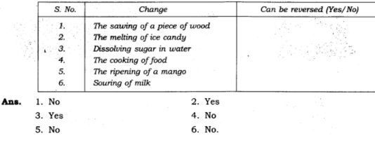

all ex and ques/ans is avlable in wedsite of ncert
1. To walk through a waterlogged area, you usually shorten the length of your dress by folding it. Can this change be reversed?
Ans: Yes, it can be reversed by unfolding the dress.
2. You accidentally dropped your favourite toy and broke it. This is a change you did not want. Can this change be reversed?
Ans: No, this change (breaking of toy) cannot be reversed.
3. Some changes are listed in the following table. For each change, write in the blank column, whether the change can be reversed or not.
ANS.=
4. A drawing sheet changes when you draw a picture on it. Can you reverse this change?
Ans: No, we cannot get fresh drawing sheet once a picture is drawn on it with paint/ oil or water. However, we can reverse the change, if soft pencil is used to draw the picture.
5. Give examples to explain the difference between changes that can or cannot be reversed.
Ans: Examples of reversible and irreversible changes
6. A thick coating of a paste of Plaster of Paris (POP) is applied over the bandage on a fractured bone. It becomes hard on drying to keep the fractured bone immobilised. Can the change in POP be reversed?
Ans: No, the change in POP cannot be reversed since it is a chemical change.
7. A bag of cement lying in the open gets wet due to rain during the night. The next day the sun shines brightly. Do you think the changes, which have occurred in the cement, could be reversed?
Ans. No, these are irreversible chemical changes.